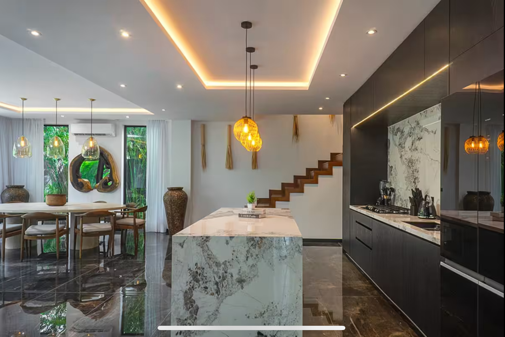

El Mercado Inmobiliario de la Riviera Maya — Contexto
Playa del Carmen y la Riviera Maya se han convertido en uno de los mercados inmobiliarios más dinámicos de América Latina. La demanda de propiedades de alquiler —tanto vacacional en Airbnb como de larga estancia para expatriados y nómadas digitales— ha generado una fuerte diferenciación de precios basada en la calidad de los acabados.
Los compradores e inquilinos internacionales, acostumbrados a estándares europeos o norteamericanos, comparan directamente el nivel de equipamiento. Una cocina de catálogo genérica no compite con una cocina integral a medida en la mente —y en el bolsillo— del inquilino objetivo.

"Uno de nuestros clientes invirtió 95,000 MXN en una cocina integral completa para su departamento en Playa del Carmen. Tres meses después, el alquiler mensual pasó de 1,800 USD a 2,600 USD. El ROI de la cocina fue de 10 meses."
— Raphaël, Ka'ax Creación — Playa del CarmenLos Tres Impactos Medibles de la Carpintería de Calidad
1. Precio de alquiler mensual
En el mercado de alquiler vacacional (Airbnb, Vrbo) y de media estancia, el precio por noche o por mes depende directamente de las fotos y del nivel de equipamiento percibido. Una cocina integral con isla, encimera de piedra y armarios hasta el techo es el elemento más fotografiado y citado en las reseñas de los huéspedes.
Los datos de mercado de la Riviera Maya en 2026 muestran diferencias de entre +20% y +45% en el precio de alquiler entre propiedades con acabados estándar y propiedades con acabados de lujo de la misma superficie.
2. Precio de reventa
En el momento de la reventa, los compradores comparan propiedades en bruto con propiedades equipadas. Una propiedad con cocina integral a medida, vestidor y carpintería de calidad puede pedir entre 8% y 15% más que una propiedad equivalente sin equipar. Para un departamento de 3 millones de MXN, eso representa entre 240,000 y 450,000 MXN de diferencia en el precio de venta.
3. Velocidad de alquiler o venta
Las propiedades bien equipadas se alquilan o se venden más rápido. Menos tiempo vacío en alquiler significa más ingresos al año. En ventas, la reducción del tiempo en mercado también reduce los costos de carrying cost (mantenimiento, impuestos, servicios durante el período de venta).
Ejemplo real: Departamento 2 hab. — Playa del Carmen 2026
Qué Muebles dan el Mayor Retorno
| Elemento | Inversión típica | Impacto alquiler | Impacto reventa | Prioridad |
|---|---|---|---|---|
| Cocina integral | 80,000–180,000 MXN | +20–35% | +8–12% | ★★★★★ |
| Vestidor a medida | 45,000–120,000 MXN | +8–15% | +3–6% | ★★★★☆ |
| Baño equipado | 30,000–80,000 MXN | +10–20% | +4–8% | ★★★★☆ |
| Mueble TV / sala | 20,000–55,000 MXN | +5–10% | +2–4% | ★★★☆☆ |
| Escritorio / home office | 15,000–40,000 MXN | +8–15% (perfil nómada) | +2–4% | ★★★★☆ |
La Cocina: El Elemento con Mayor ROI
Consistentemente, la cocina integral es el elemento con mayor impacto en el precio de alquiler y la percepción de valor de una propiedad. Las razones son simples: es el espacio más fotografiado en las plataformas de alquiler, es el que los inquilinos usan a diario y es el que más diferencia visualmente un apartamento genérico de uno premium.
En Playa del Carmen y el corredor de Tulum, el perfil del inquilino objetivo —europeo, canadiense, nómada digital de alto ingreso— está acostumbrado a cocinas funcionales y bien equipadas. Una cocina de catálogo con módulos de melamina y frente de MDF laminado no transmite el mismo mensaje que una cocina integral a medida con roble europeo lacado y encimera de mármol.
El perfil nómada digital: una oportunidad para el home office a medida
Un segmento en crecimiento en Playa del Carmen y Tulum es el nómada digital: trabajadores remotos que se instalan durante 1 a 6 meses y pagan precios de media estancia. Este perfil valora especialmente la presencia de un escritorio bien iluminado, un mueble de home office funcional y una conexión a internet fiable. Un escritorio a medida bien integrado en la decoración puede diferenciar tu propiedad en este nicho creciente.

Preguntas Frecuentes
Depende del tiempo y del precio de venta. Si vendes en menos de 6 meses, el ROI puede ser neutro. Si alquilas 12–18 meses antes de vender, generalmente sí vale: recuperas la inversión vía alquiler y vendes a mejor precio. Te podemos ayudar a hacer el cálculo específico para tu caso.
Los datos de Airbnb en la Riviera Maya son claros: las propiedades con cocinas equipadas y fotografiadas profesionalmente consiguen tarifas entre un 25% y un 40% superiores a las de propiedades equivalentes con cocinas básicas. La cocina aparece regularmente en las reseñas de 5 estrellas: "cocina espectacular", "perfectamente equipado".
Los muebles de alquiler vacacional están sometidos a un uso intensivo. Usamos maderas densas (roble europeo) con lacas de poliuretano bicomponente especialmente resistentes al uso continuado. Con un mantenimiento básico (limpieza con productos neutros), la garantía es de 5 años y la vida útil esperada de 20 a 30 años.
En México, los muebles instalados permanentemente en una propiedad de alquiler pueden considerarse mejoras y depreciarse para efectos del ISR de renta. Te recomendamos consultarlo con tu contador, pero en la mayoría de los casos sí es deducible. Te proporcionamos factura electrónica (CFDI) con todos los conceptos desglosados.